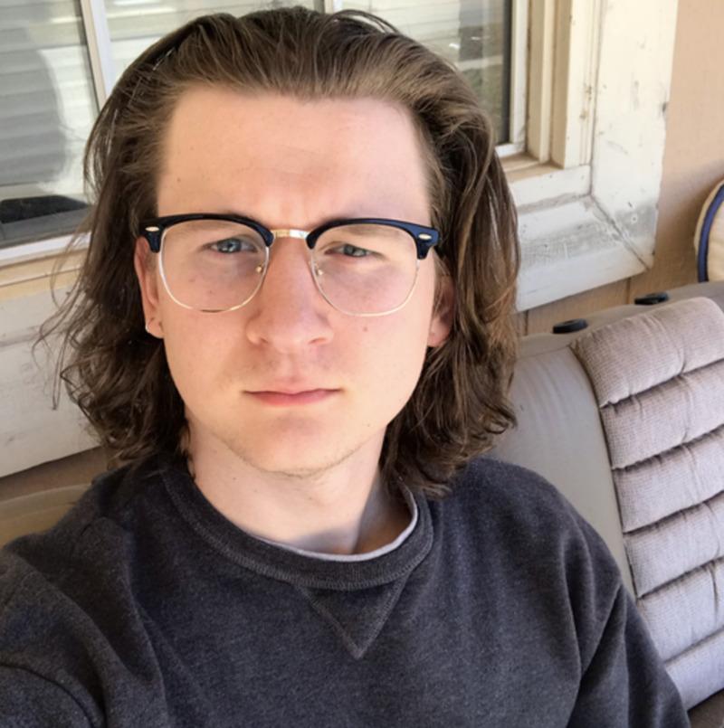
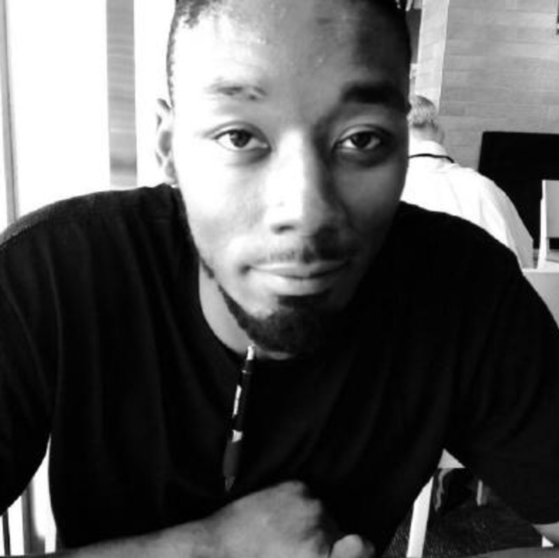
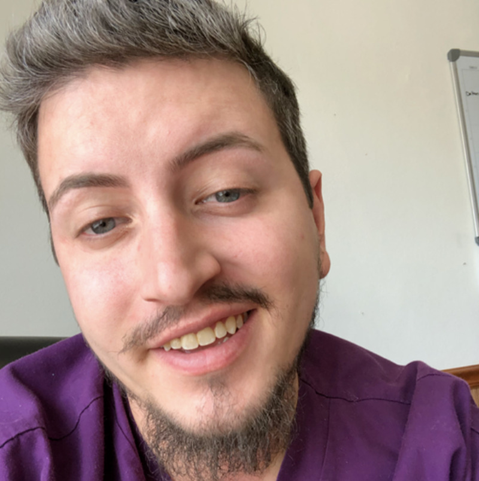

WHO WE ARE
We believe that children have been endowed by their creator with the inalienable right to be reared in a family. Thats why we make a difference in the lives of Ghanaian children by providing them with a place they can call home: a temporary home that includes food, shelter and physical, mental and emotional nurturing while trying to reintegrate them with their biological family or find them a new adoptive family.
WHAT WE DO
Our mission is to provide every child on this earth with an opportunity to gain knowledge about the world, power to act in it, and desire to be self-reliant and compassionate.
GUIDING BELIEFS
The Creator gave each of us life on this Earth so that we could learn to live happily, as He does. Our capacity for happiness increases with our capacity to love. Our capacity to love increases as we learn to see things as they really are, and as we acquire the power to act accordingly. Gaining vision and power is the heart of education.
our team
AUSTIN KELSAY - PROJECT LEAD I'm a front-end developer from Oklahoma City who cares about user privacy, accessability, and human progress.
KIM BUCK - UI / MARKETING Just another millennial developer.
DA'JUAN MCDONALD - REACT I developer from Maryland. Hobbies: Coding, Watching sports, Playing Chess and being a Father. Interests: Bug Wrangling, Security, Vulnerability Testing.
JOHN OBLENDA - WEB UI North Carolina, interest: sports and fried chicken.
JEFF GLANVILLE - REACT Developer from Iowa. I enjoy watching sports, playing with my 2 dogs and coding. My interests include watching youtube videos, reading mystery books and experimenting with food to make the flavors come out.
OKSANA KRILL - BACK-END DEVELOPER Just try to make my code work in the best way.
DALTON Dalton is a Youth Support Specialist at a residential care facility for children and a Full-Stack Web Development student at Lambda School. In his free time Dalton loves to play video games on his PC, his favorite being League of Legends.
